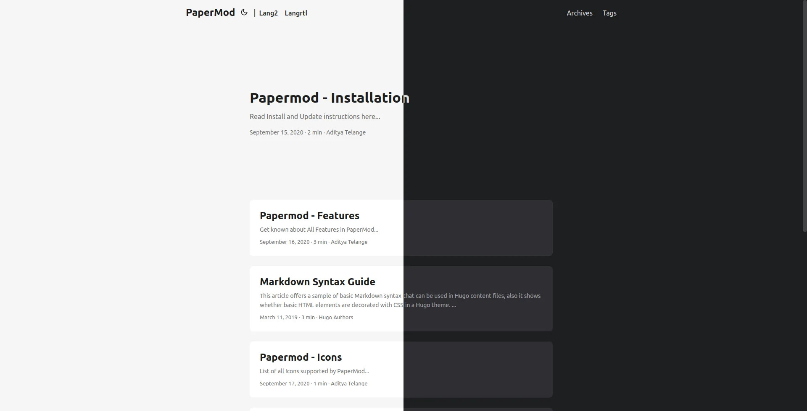

Intro
-
We’ll be using
yml/yamlformat for all examples down below, I recommend usingymlovertomlas it is easier to read. -
You can find any YML to TOML converters if necessary.
Assets (js/css)
The following is enabled by default
- minification - makes the assets size smallest as possible.
- bundling - bundles all the styles in one single asset
- fingerprint/intergity check.
Default Theme light/dark/auto
|
|
Theme Switch Toggle (enabled by default)
Shows icon besides title of page to change theme
To disable it :
|
|
You can refer following table for better understanding…
defaultTheme |
disableThemeToggle |
checks local storage? | checks system theme? | Info |
|---|---|---|---|---|
auto |
true | No | Yes | only system theme |
| false | Yes (if not->2) | Yes (2) | switch present | |
dark |
true | No | No | force dark only |
| false | Yes | No | switch present | |
light |
true | No | No | force light only |
| false | Yes | No | switch present |
Archives Layout
Create a page with archive.md in content directory with following content
|
|
and add the following to it
|
|
Note: Archives Layout does not support Multilingual Month Translations.
ex: archives.md
Regular Mode (default-mode)

Home-Info Mode

Use 1st entry as some Information
add following to config file
|
|
Profile Mode

Shows Index/Home page as Full Page with Social Links and Image
add following to config file
|
|
Search Page
PaperMod uses Fuse.js Basic for search functionality
Add the following to site config, config.yml
|
|
Create a page with search.md in content directory with following content
|
|
To hide a particular page from being searched, add it in post’s frontmatter
|
|
ex: search.md
Search Page also has Key bindings:
- Arrow keys to move up/down the list
- Enter key (return) or Right Arrow key to go to the highlighted page
- Escape key to clear searchbox and results
For Multilingual use search.<lang>.md ex. search.es.md.
Note: Search will work only on current language, user is currently on !
Customizing Fusejs Options
Refer https://fusejs.io/api/options.html for Options, Add those as shown below.
|
|
Draft Page indication
adds [draft] mark to indicate draft pages.
Post Cover Image
In post’s page-variables add :
|
|
When you include images in the Page Bundle, multiple sizes of the image will automatically be provided using the HTML5 srcset field.
To reduce generation time and size of the site, you can disable this feature using
|
|
To enable hyperlinks to the full image size on post pages, use
|
|
Share Buttons on post
Displays Share Buttons at Bottom of each post
to show share buttons add
|
|
Show post reading time
Displays Reading Time (the estimated time, in minutes, it takes to read the content.)
To show reading time add
|
|
Show Table of Contents (Toc) on blog post
Displays ToC on blog-pages
To show ToC add following to page-variables
|
|
To keep Toc Open by default on a post add following to page-variables:
|
|
BreadCrumb Navigation
Adds BreadCrumb Navigation above Post’s Title to show subsections and Navigation to Home
|
|
Can be diabled for particular page’s front-matter
|
|
Edit Link for Posts
Add a button to suggest changes by using the file path of the post to link to a edit destination.
For site config use:
|
|
Can be modified for individual pages
|
|
The example above would yield the following link for the post file posts/post-name.md:
https://github.com/<path_to_repo>/content/posts/post-name.md
| Parameter | Required | Default Value |
|---|---|---|
| editPost.URL | true | - |
| editPost.appendFilePath | false | false |
| editPost.Text | false | “Edit” |
Since the link generated is a regular HTML anchor tag <a href=...>, you can
also use other URL schemas like mailto://, e.g.
URL: "mailto://mail@example.com?subject=Suggesting changes for "
Other Posts suggestion below a post
Adds a Previous / Next post suggestion under a single post
|
|
Code Copy Button
Adds a copy button in code block to copy the code it contains
|
|
Multiple Authors
To Use multiple authors for a post, in post-variables:
|
|
To use Multiple Authors Site-wide, in config.yml:
|
|
Comments
to add comments, create a html file
layouts/partials/comments.html
and paste code provided by your comments provider
also in config add this
|
|
read more about this hugo-comments
AccessKeys
|
|
Enhanced SEO
Enabled only when env: production
Twitter Cards Support
- The Twitter Cards metadata, except
twitter:imageshould not require additional configuration, since it is generated from metadata that you should already have (for instance the page title and description). - The
twitter:imageuses the Post Cover Image, if present. - In the absence of a cover images, the first image from the
imagesfrontmatter (a list) is used.1 2 3images: - image_01.png - image_02.png - Finally, if neither of those are provided,
twitter:imagecomes from the first Page Bundle image withfeaturein the name, with a fallback to the first image withcoverorthumbnailin the name.
OpenGraph support
- The OpenGraph metadata, except
og:imageshould not require additional configuration, since it is generated from metadata that you should already have (for instance the page title and description). - The
og:imageuses the Post Cover Image, if present. - In the absence of a cover images, the first image from the
imagesfrontmatter (a list) is used.1 2 3images: - image_01.png - image_02.png - Finally, if neither of those are provided,
og:imagecomes from the first Page Bundle image withfeaturein the name, with a fallback to the first image withcoverorthumbnailin the name. - For pages, you can also add audio (using frontmatter
audio: filename.ext) and/or videos.1 2 3videos: - filename01.mov - filename02.avi
Multilingual Support
Misc
Scroll-Bar themed (by default)
Smooth Scroll between in-page links (by default)
Scroll-to-Top Button (by default)
|
|